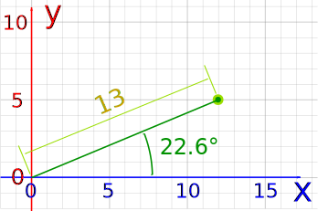
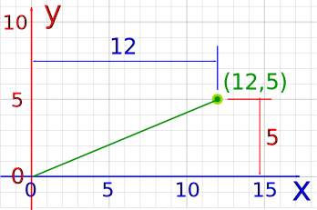

Scalars and Vectors
(... and Matrices)
What are Scalars and Vectors?
A scalar has only magnitude (size):
3.044, −7 and 2½ are scalars
Distance, speed, time, temperature, mass, length, area, volume, density, charge, pressure, energy, work and power are all scalars.
A vector has magnitude and direction:

And watch out for these special words:

Distance vs Displacement
- Distance is a scalar ("3 km")
- Displacement is a vector ("3 km Southeast")
You can walk a long distance, but your displacement may be small (or zero if you return to the start).
Speed vs Velocity

- Speed is how fast something moves.
- Velocity is speed with a direction.
Saying Ariel the Dog runs at 9 km/h (kilometers per hour) is a speed.
But saying he runs 9 km/h Westwards is a velocity.
See Speed and Velocity to learn more.
Notation
A vector is often written in bold, like a or b so we know it is not a scalar:
- so c is a vector, it has magnitude and direction
- but c is a scalar, like 3 or 12.4
Example: kb is actually the scalar k times the vector b.

A vector can also be written as the letters of its head and tail with an arrow above it, like this:
Using Scalars
Scalars are easy to use. Just treat them as normal numbers.
Example: 3 kg + 4 kg = 7 kg
Using Vectors
The page on vectors has more detail, but here is a quick summary:
We can add two vectors by joining them head-to-tail:

We can subtract one vector from another:
- first we reverse the direction of the vector we want to subtract,
- then add them as usual:

a − b
We can multiply a vector by a scalar (called "scaling" a vector):
Example: multiply the vector m = (7,3) by the scalar 3
 |
a = 3m = (3×7,3×3) = (21,9) |
It still points in the same direction, but is 3 times longer
(And now you know why numbers are called "scalars", because they "scale" the vector up or down.)
Polar or Cartesian
A vector can be in:
- magnitude and direction (Polar) form,
- or in x and y (Cartesian) form
Like this:
 |
<=> |  |
| Vector a in Polar Coordinates |
Vector a in Cartesian Coordinates |
(Read how to convert them at Polar and Cartesian Coordinates.)
Example: the vector 13 at 22.6°
In Polar (magnitude and direction) form:

The vector 13 at 22.6°
Is approximately (12,5) In Cartesian (x,y) form:

The vector (12,5)
Have a try of the Vector Calculator to get a feel for how it all works.
Multiplying a Vector by a Vector (Dot Product and Cross Product)
 |
How do we multiply two vectors together? There is more than one way!
(Read those pages for more details.) |
More Than 2 Dimensions
Vectors also work perfectly well in 3 or more dimensions:

The vector (1,4,5)
List of Numbers
So a vector can be thought of as a list numbers:
- 2 numbers for 2D space, such as (4,7)
- 3 numbers for 3D space, such as (1,4,5)
- etc
Scalars, Vectors and Matrices
And when we include matrices we get this interesting pattern:
- A scalar is a number, like 3, -5, 0.368, etc,
- A vector is a list of numbers (can be in a row or column),
- A matrix is an array of numbers (one or more rows, one or more columns).

In fact a vector is also a matrix! Because a matrix can have just one row or one column.
So the rules that work for matrices also work for vectors.